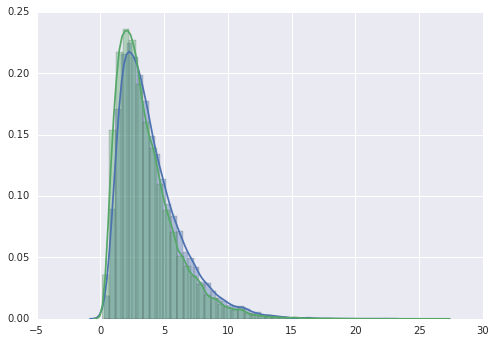
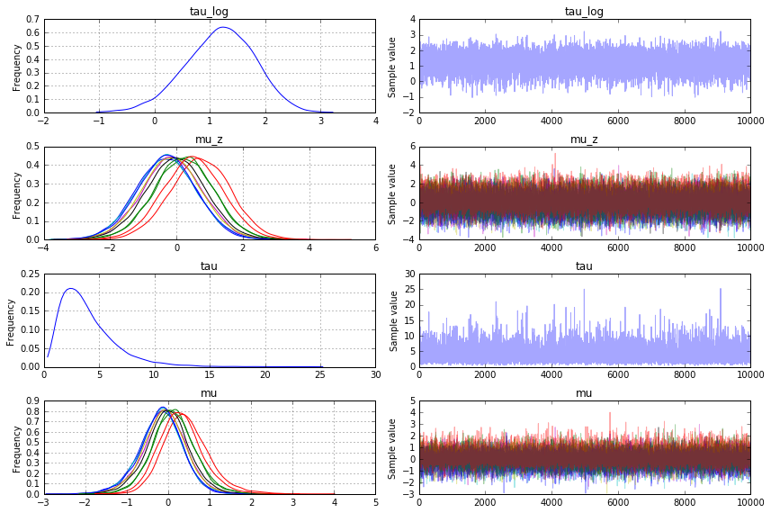

In [26]:
#!/usr/bin/env python2
from __future__ import division
import numpy as np
import pymc3 as mc
import scipy as sci
import theano.tensor as th
np.random.seed(13)
n = 10
tau_scale = 2
tau0 = sci.stats.expon.rvs() * tau_scale
mu0 = np.random.randn(n) / np.sqrt(tau0)
x0 = mu0 + np.random.randn(n)
with mc.Model() as model1:
tau = mc.Exponential('tau', lam=1 / tau_scale, )
mu = mc.Normal('mu', tau=tau, shape=(n,))
mc.Normal('x', mu=mu, observed=x0)
with mc.Model() as model2:
tau = mc.Exponential('tau', lam=1 / tau_scale)
mu_z = mc.Normal('mu_z', shape=(n,))
mu = mc.Deterministic('mu', mu_z / th.sqrt(tau))
mc.Normal('x', mu=mu, observed=x0)
def infer(model):
with model:
map_ = mc.find_MAP(fmin=sci.optimize.fmin_l_bfgs_b)
print(map_)
hess = mc.find_hessian(map_)
step = mc.NUTS(scaling =hess)
#step = mc.NUTS()
trace = mc.sample(100, step=step, progressbar=False)
step = mc.NUTS(scaling=trace[-1])
return mc.sample(11000, step=step, progressbar=False)
trace1 = infer(model1)
trace2 = infer(model2)
with model2:
trace3 = mc.sample(100000, step=mc.Metropolis(), progressbar=False,
start=mc.find_MAP(fmin=sci.optimize.fmin_l_bfgs_b))
samples_tau1 = trace1['tau'][1000:]
samples_tau2 = trace2['tau'][1000:]
samples_tau3 = trace3['tau'][10000:]
print( 'pymc3 version: ' + mc.__version__)
print( 'Model 1 NUTS tau')
print( 'Mean: {0:3.1f}'.format(samples_tau1.mean()))
print( 'Standard Deviation: {0:3.1f}'.format(samples_tau1.std()))
print( 'Median {0:3.1f}'.format(np.percentile(samples_tau1, 50)))
print()
print( 'Model 2 NUTS tau')
print( 'Mean: {0:3.1f}'.format(samples_tau2.mean()))
print( 'Standard Deviation: {0:3.1f}'.format(samples_tau2.std()))
print( 'Median {0:3.1f}'.format(np.percentile(samples_tau2, 50)))
print()
print( 'Model 2 Metropolis tau')
print( 'Mean: {0:3.1f}'.format(samples_tau3.mean()))
print( 'Standard Deviation: {0:3.1f}'.format(samples_tau3.std()))
print( 'Median {0:3.1f}'.format(np.percentile(samples_tau3, 50)))
Applied log-transform to tau and added transformed tau_log to model.
Applied log-transform to tau and added transformed tau_log to model.
{'tau_log': array(2.4429919807805516), 'mu': array([-0.06059215, 0.04253397, 0.13906949, -0.05520804, -0.02540626,
-0.02849384, -0.00025149, -0.05427661, 0.04359657, 0.09291143])}
---------------------------------------------------------------------------
IndexError Traceback (most recent call last)
<ipython-input-26-85c25bf78123> in <module>()
38 return mc.sample(11000, step=step, progressbar=False)
39
---> 40 trace1 = infer(model1)
41 trace2 = infer(model2)
42
<ipython-input-26-85c25bf78123> in infer(model)
32 print(map_)
33 hess = mc.find_hessian(map_)
---> 34 step = mc.NUTS(scaling=hess)
35 #step = mc.NUTS()
36 trace = mc.sample(100, step=step, progressbar=False)
/home/wiecki/working/projects/pymc/pymc3/step_methods/nuts.py in __init__(self, vars, scaling, step_scale, is_cov, state, Emax, target_accept, gamma, k, t0, model, profile, **kwargs)
95
96 shared = make_shared_replacements(vars, model)
---> 97 self.leapfrog1_dE = leapfrog1_dE(model.logpt, vars, shared, self.potential, profile=profile)
98
99 super(NUTS, self).__init__(vars, shared, **kwargs)
/home/wiecki/working/projects/pymc/pymc3/step_methods/nuts.py in leapfrog1_dE(logp, vars, shared, pot, profile)
200 e.tag.test_value = 1
201
--> 202 q1, p1 = leapfrog(H, q0, p0, 1, e)
203 E = energy(H, q1, p1)
204 E0 = energy(H, q0, p0)
/home/wiecki/working/projects/pymc/pymc3/step_methods/hmc.py in leapfrog(H, q, p, n, e)
116 for i in range(n):
117 #alternate full variable and momentum updates
--> 118 q = q + e * pot.velocity(p)
119
120 if i != n - 1:
/home/wiecki/working/projects/pymc/pymc3/step_methods/quadpotential.py in velocity(self, x)
95
96 def velocity(self, x):
---> 97 return cho_solve((self.L, True), x)
98
99 def random(self):
/home/wiecki/miniconda3/lib/python3.4/site-packages/scipy/linalg/decomp_cholesky.py in cho_solve(c_and_lower, b, overwrite_b, check_finite)
169 if c.ndim != 2 or c.shape[0] != c.shape[1]:
170 raise ValueError("The factored matrix c is not square.")
--> 171 if c.shape[1] != b1.shape[0]:
172 raise ValueError("incompatible dimensions.")
173
IndexError: tuple index out of range
In [ ]:
#3.5, standard deviation 2.3, and median 3.0
In [24]:
import seaborn as sns
#sns.distplot(trace1['tau'][1000:])
sns.distplot(trace2['tau'][1000:])
sns.distplot(trace3['tau'][1000:])
Out[24]:
<matplotlib.axes._subplots.AxesSubplot at 0x7fad3d851630>

In [3]:
#!/usr/bin/env python2
from __future__ import division
import numpy as np
import pymc3 as mc
import scipy as sci
import theano.tensor as th
np.random.seed(13)
n = 10
tau_scale = 2
tau0 = sci.stats.expon.rvs() * tau_scale
mu0 = np.random.randn(n) / np.sqrt(tau0)
x0 = mu0 + np.random.randn(n)
with mc.Model() as model1:
tau = mc.Exponential('tau', lam=1 / tau_scale, transform=None)
mu = mc.Normal('mu', tau=tau, shape=(n,))
mc.Normal('x', mu=mu, observed=x0)
with mc.Model() as model2:
tau = mc.Exponential('tau', lam=1 / tau_scale, transform=None)
mu_z = mc.Normal('mu_z', shape=(n,))
mu = mc.Deterministic('mu', mu_z / th.sqrt(tau))
mc.Normal('x', mu=mu, observed=x0)
def infer(model):
with model:
map_ = mc.find_MAP(fmin=sci.optimize.fmin_l_bfgs_b)
step = mc.NUTS(scaling=map_)
trace = mc.sample(100, step=step, start=map_, progressbar=False)
step = mc.NUTS(scaling=trace[-1])
return mc.sample(11000, step=step, start=trace[-1], progressbar=False)
trace1 = infer(model1)
trace2 = infer(model2)
with model2:
trace3 = mc.sample(100000, step=mc.Metropolis(), progressbar=False,
start=mc.find_MAP(fmin=sci.optimize.fmin_l_bfgs_b))
samples_tau1 = trace1['tau'][1000:]
samples_tau2 = trace2['tau'][1000:]
samples_tau3 = trace3['tau'][10000:]
print( 'pymc3 version: ' + mc.__version__)
print( 'Model 1 NUTS tau')
print( 'Mean: {0:3.1f}'.format(samples_tau1.mean()))
print( 'Standard Deviation: {0:3.1f}'.format(samples_tau1.std()))
print( 'Median {0:3.1f}'.format(np.percentile(samples_tau1, 50)))
print()
print( 'Model 2 NUTS tau')
print( 'Mean: {0:3.1f}'.format(samples_tau2.mean()))
print( 'Standard Deviation: {0:3.1f}'.format(samples_tau2.std()))
print( 'Median {0:3.1f}'.format(np.percentile(samples_tau2, 50)))
print()
print( 'Model 2 Metropolis tau')
print( 'Mean: {0:3.1f}'.format(samples_tau3.mean()))
print( 'Standard Deviation: {0:3.1f}'.format(samples_tau3.std()))
print( 'Median {0:3.1f}'.format(np.percentile(samples_tau3, 50)))
pymc3 version: 3.0
Model 1 NUTS tau
Mean: 3.6
Standard Deviation: 3.0
Median 2.8
Model 2 NUTS tau
Mean: 3.4
Standard Deviation: 0.0
Median 3.4
Model 2 Metropolis tau
Mean: 3.5
Standard Deviation: 2.3
Median 2.9
In [11]:
%matplotlib inline
import pymc3 as pm
pm.traceplot(trace2[1000:]);
